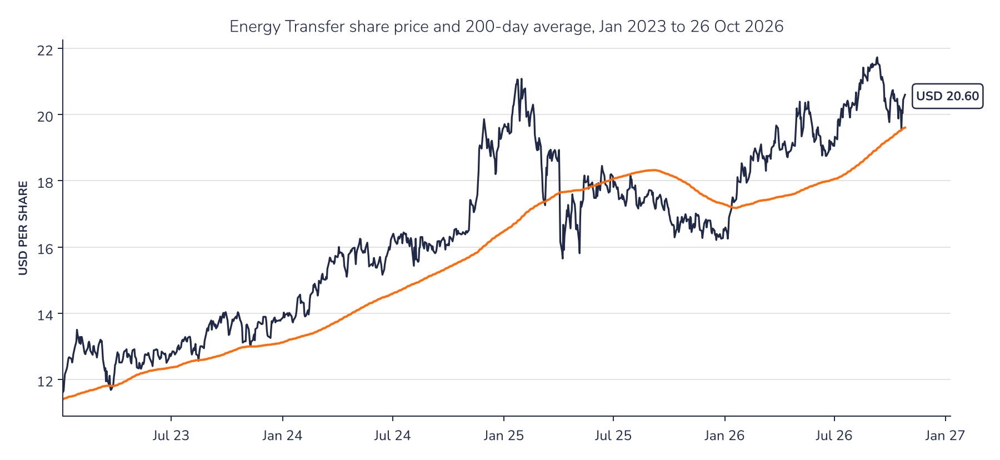
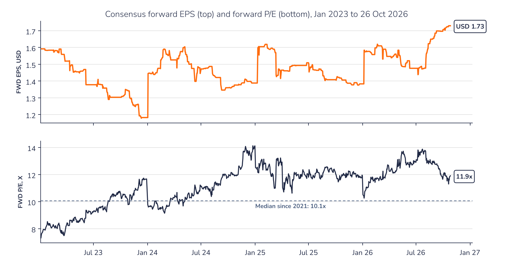

Ad-hoc opinion · Energy infrastructure
Charts
Charts as of the close on 26 October 2026.
Chart 1 · ET US: steady gains since 2023
Daily closing price in USD and 200-day moving average since January 2023

Source: Syz Research, Bloomberg
Chart 2 · ET US: the re-rating has outpaced earnings
Consensus forward 12-month EPS in USD (top) and forward P/E (bottom) since January 2023; the dashed line is the median P/E since 2021

Source: Syz Research, Bloomberg